Tierras Intermedias
Bienvenido a la guía interactiva. Selecciona un fragmento del Círculo para comenzar a explorar su contenido.
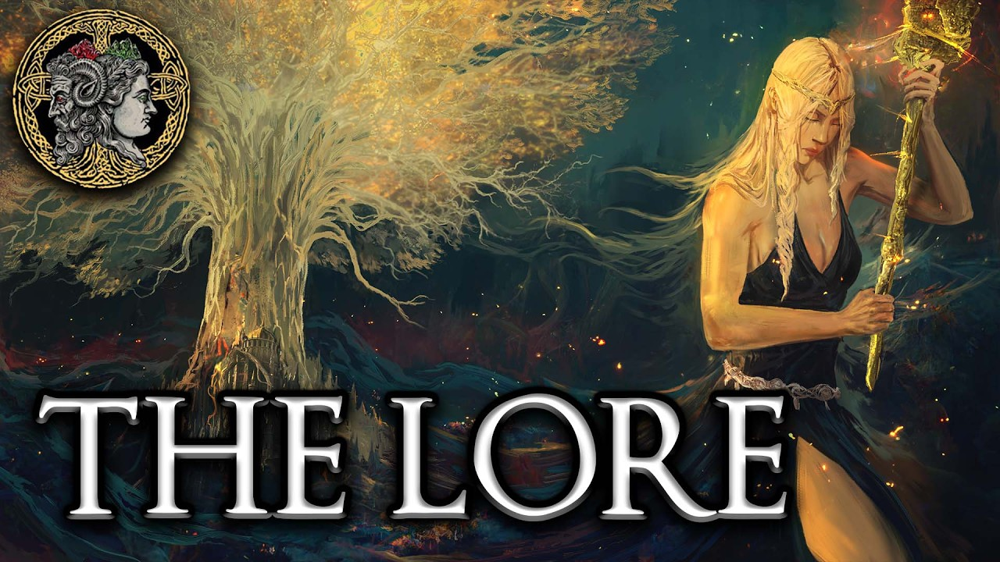
Historia y Lore
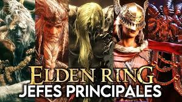
Grandes Jefes
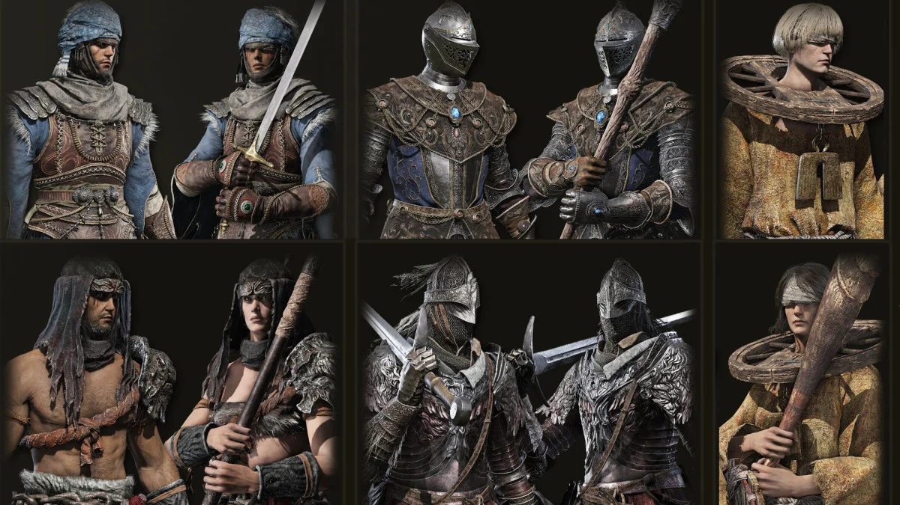
Clases y Atributos
El Lore de las Tierras Intermedias
La historia de Elden Ring, escrita por George R.R. Martin y Hidetaka Miyazaki, narra el ascenso y la caída de un orden divino en un mundo fragmentado.
1. La Era Primordial y la Gran Voluntad
Mucho antes del Árbol Áureo, existía el Crisol de la Vida, donde toda la existencia estaba unida. Sin embargo, una entidad cósmica conocida como la Gran Voluntad envió una estrella a las Tierras Intermedias que contenía a la Bestia de Elden, la cual se convertiría en el Círculo de Elden.
2. El Reinado de Marika y el Orden Dorado
La Reina Marika la Eterna fue elegida como vasalla de la Gran Voluntad. Ella creó el Orden Dorado al extraer la Runa de la Muerte del Círculo de Elden, eliminando la muerte natural del mundo.
| Personaje | Rol en la Historia |
|---|---|
| Marika la Eterna | Reina Diosa y vasalla de la Gran Voluntad. |
| Godfrey | Primer Señor de Elden y líder de los Sinluz. |
| Radagon | El segundo Señor de Elden (cuya identidad es un gran misterio). |
3. La Noche de los Puñales Negros y La Devastación
La paz se rompió cuando la Runa de la Muerte fue robada. Godwyn el Dorado fue asesinado, siendo el primer semidiós en morir. Esto llevó a Marika a romper el Círculo de Elden en un acto de desesperación o rebelión.
- Los Fragmentos: Los hijos de Marika (semidioses) reclamaron las Grandes Runas.
- La Guerra: Se desató una guerra total conocida como La Devastación, donde nadie salió victorioso.
- El Abandono: La Gran Voluntad abandonó a los semidioses debido a su ambición ciega.
4. El Regreso de los Sinluz
Ahora, la Gracia perdida vuelve a guiar a los Sinluz (como tú), que fueron exiliados hace eones. Tu misión es cruzar el Mar de Niebla, derrotar a los semidioses, reclamar las runas y convertirte en el nuevo Señor de Elden.
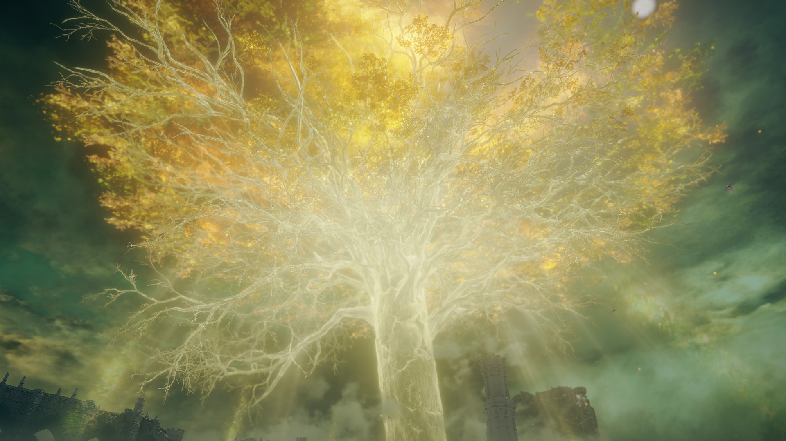
Portadores de Esquirlas y Jefes Legendarios
Las Tierras Entre Medias están custodiadas por los semidioses y reyes caídos, quienes reclaman los fragmentos del Círculo de Elden. Deberás derrotarlos para reclamar las Grandes Runas y reparar el Círculo.
Margit, el Augurio Caído
Ubicación: Castillo de Velo Tormentoso
El primer gran muro para cualquier Sinluz. Armado con un bastón gigante y dagas de luz dorada, es la identidad falsa que usa Morgott para cazar a los campeones antes de que se acerquen a la capital.
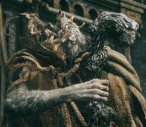
Godrick, el Injertado
Ubicación: Castillo de Velo Tormentoso
Señor de Necrolimbo. Debido a su debilidad hereditaria, recurrió a la macabra técnica del "injerto", mutilando a incontables guerreros para implantarse sus extremidades. En combate, mutila su propio brazo para usar la cabeza de un dragón escupefuegos.

Reina Rennala de la Luna Llena
Ubicación: Academia de Raya Lucaria
Líder de la casa de Caria y maestra de la magia de reencarnación. Aunque está sumida en el dolor por el abandono de Radagon, protege con recelo la Gran Runa del Nacimiento Inonato dentro de un huevo de ámbar.
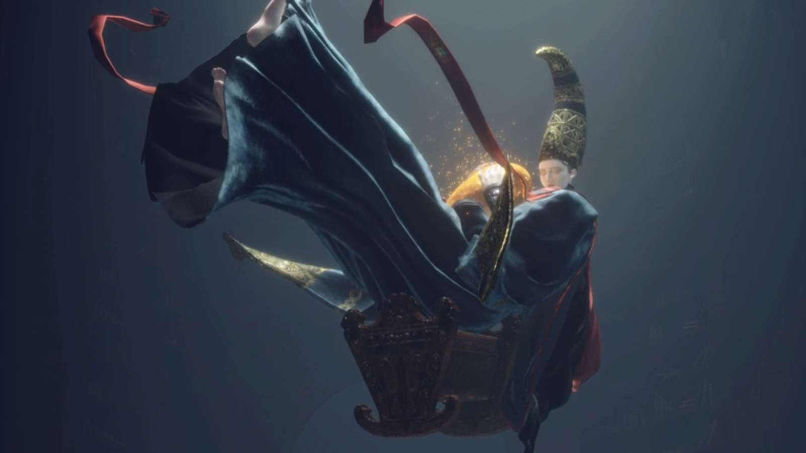
General Radahn, Azote de las Estrellas
Ubicación: Castillo de la Melena Roja (Caelid)
El semidiós más poderoso en fuerza física, capaz de dominar la gravedad para detener el curso de los astros. Tras su batalla contra Malenia, fue consumido por la Putrefacción Roja y ahora deambula como una bestia salvaje que devora cadáveres.
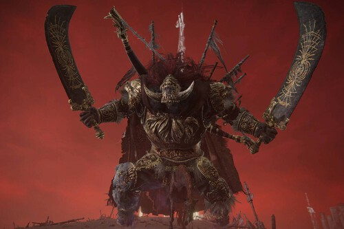
Rykard, Señor de la Blasfemia
Ubicación: Mansión del Volcán
Un semidiós rebelde que decidió devorar y ser devorado por la Gran Serpiente devoradora de Dioses para alcanzar la inmortalidad. Su objetivo es derrocar a la Gran Voluntad y fusionar a todos los campeones dentro de su propio ser carnoso.
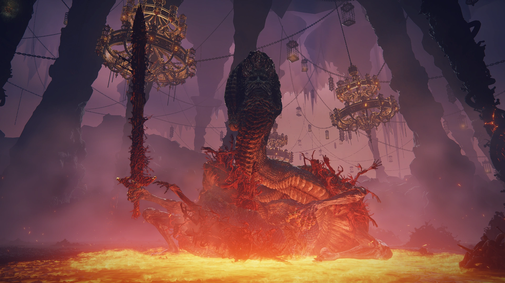
Morgott, el Rey de los Augurios
Ubicación: Leyndell, Capital Real
A pesar de haber nacido con la maldición de los Augurios y ser encerrado en las cloacas, es el único hijo que se mantuvo fiel al Árbol Áureo durante la Devastación, defendiendo el trono vacío de la capital frente a cualquier usurpador.
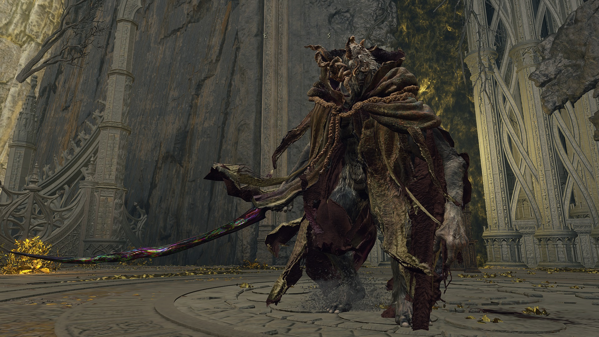
Malenia, la Espada de Miquella
Ubicación: El Árbol Hierático de Miquella
La guerrera invicta de las Tierras Entre Medias. Porta una prótesis de oro puro en su brazo y combate usando una agilidad sobrehumana. Cuando se ve acorralada, desata el poder de la Diosa de la Putrefacción Roja.
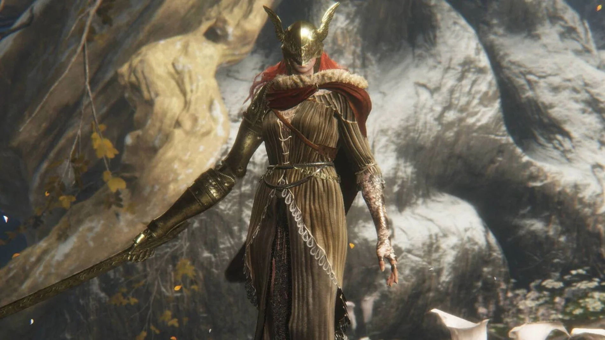
Maliketh, la Hoja Negra
Ubicación: Farum Azula, la Ciudad En Ruinas
La sombra fiel de la Reina Marika. Custodia la Runa de la Muerte Sellada dentro de su propia carne para que nadie pueda volver a robar el destino de la muerte mortal. Su espada infunde un terror absoluto incluso en los semidioses.

Radagon de la Orden Dorada & La Bestia de Elden
Ubicación: El Interior del Árbol Áureo (Combate Final)
El desafío definitivo para enmendar el Círculo. Radagon, el campeón de cabello pelirrojo y la otra mitad de la Reina Marika, defiende los restos del orden fracturado empuñando el mismísimo martillo rúnico. Al ser derrotado, de su cuerpo surge la Bestia de Elden, una entidad divina enviada por la Gran Voluntad que toma la forma de una majestuosa criatura cósmica acuática, personificando el concepto mismo del Círculo de Elden.
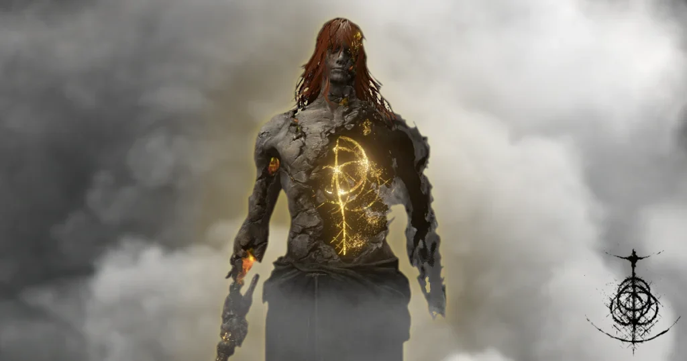
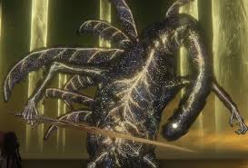
Atributos e Identidades de las Clases
Cada senda determina tu equipamiento inicial y la distribución de tus runas en los primeros niveles. Elige con sabiduría, pues el origen de tu Sinluz marcará tus primeros pasos en las Tierras Intermedias.
| Clase | Nivel | Vigor | Mente | Aguante | Fuerza | Destreza | Inteligencia | Fe |
|---|---|---|---|---|---|---|---|---|
| Vagante | 9 | 15 | 10 | 11 | 14 | 13 | 9 | 9 |
| Astrólogo | 6 | 9 | 15 | 9 | 8 | 12 | 16 | 7 |
| Héroe | 7 | 14 | 9 | 12 | 16 | 9 | 7 | 8 |
| Samurái | 9 | 12 | 11 | 13 | 12 | 15 | 9 | 8 |
| Confesor | 10 | 10 | 13 | 10 | 12 | 12 | 9 | 14 |
| Miserable | 1 | 10 | 10 | 10 | 10 | 10 | 10 | 10 |
Detalles del Equipamiento Inicial
Si estás pensando en elegir una de las nuevas sendas, esto es lo que llevarás en tu inventario al despertar en la Capilla de la Anticipación:
El Samurái: Un guerrero formidable proveniente de la lejana Tierra de los Juncos. Comienza con la mítica catana Uchigatana (capaz de infligir daño por sangrado pasivo) y un arco largo con flechas de fuego para ataques a distancia. Su armadura es excelente para el inicio del juego.
El Confesor: Un heraldo de la iglesia que opera en las sombras, ideal para un estilo de juego híbrido. Comienza equipado con una espada recta, un escudo que bloquea el 100% del daño físico y un catalizador sagrado para lanzar encantamientos de curación inmediata y sigilo.
El Miserable: Un lienzo en blanco. Un Sinluz despojado de todo orgullo que viene al mundo tal como nació: en paños menores y armado únicamente con un tosco Garrote de madera. Es la clase favorita de los veteranos porque su nivel 1 permite moldear los atributos desde cero sin desperdiciar runas.
El Vagante: Un caballero desterrado de su patria que vaga por el mundo cargando con el peso de su pesada armadura. Al comenzar con mucho Vigor y Fuerza, es ideal para guerreros tradicionales que confían en su espada y un escudo robusto.
El Astrólogo: Un erudito que lee el destino en las estrellas y domina la magia. Su físico es frágil, pero posee la Inteligencia más alta, lo que le permite lanzar potentes hechizos a larga distancia desde el primer minuto.
El Héroe: Un aguerrido descendiente de los jefes de las tierras baldías. Equipado con un hacha de batalla, es una clase nacida para la fuerza bruta y el combate agresivo a corta distancia con armas pesadas.
Galería de Paisajes
Postales de los entornos más sobrecogedores y lúgubres de las Tierras Intermedias.

Necrolimbo

Liurnia

Caelid

Meseta de Altus

Capital Real de Leyndell

Desmoronada Farum Azula
Únete al Pacto del Sinluz
Envía un mensaje a la Mesa Redonda para registrarte en la búsqueda del Círculo.